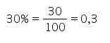

A matemática financeira é a área da matemática que estuda a equivalência de capitais no tempo, ou seja, como se comporta o valor do dinheiro no decorrer do tempo.
Sendo um área aplicada da Matemática, estuda diversas operações ligadas ao dia a dia das pessoas. Por esse motivo, conhecer suas aplicações é fundamental.
A porcentagem (%) significa por cento, ou seja, uma determinada parte de cada 100 partes. Como representa uma razão entre números, pode ser escrita na forma de fração ou como número decimal.
No início do mês, o preço do quilo da carne era de 25 reais. No final do mês a carne era vendida por 28 reais o quilo.
Assim, podemos concluir que houve uma variação percentual relacionada com o aumento desse produto. Podemos constatar que o aumento foi de 3 reais. Pela razão dos valores temos:
O cálculo de juros pode ser simples ou composto. No regime de capitalização simples, a correção é feita sempre sobre o valor do capital inicial.
Já nos juros compostos, a taxa de juros é aplicada sempre sobre o montante do período anterior. Note que esse último é muito utilizado nas transações comerciais e financeiras.
Os juros simples são calculados levando em consideração um determinado período. Ele é calculado pela fórmula:
C: capital aplicado
i: taxa de juros
n: período que corresponde os juros
Logo, o montante dessa aplicação será:
M=C+J
M=C+C.i.n
M=C.(1+i.n)
O sistema de juros compostos é chamado de capitalização acumulada, pois, ao final de cada período os juros que incidem sobre o capital inicial são incorporados.
Para calcular o montante em uma capitalização a juros compostos, usamos a seguinte fórmula:
Mn=C(1+i)^n
← Página Anterior Página Seguinte →